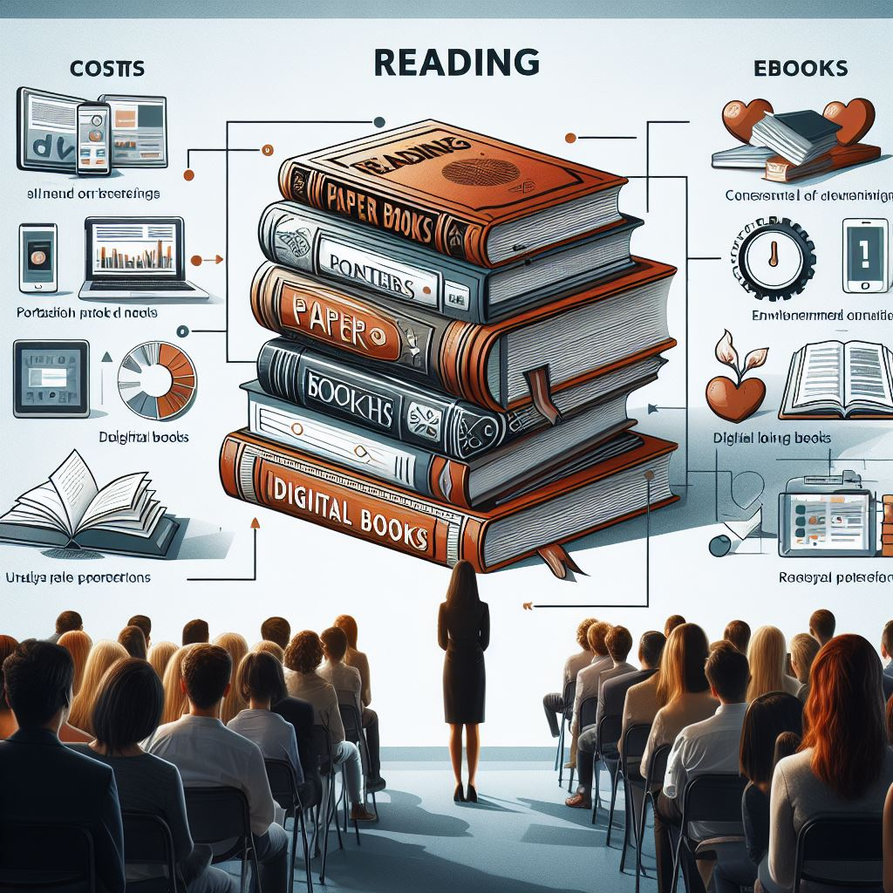
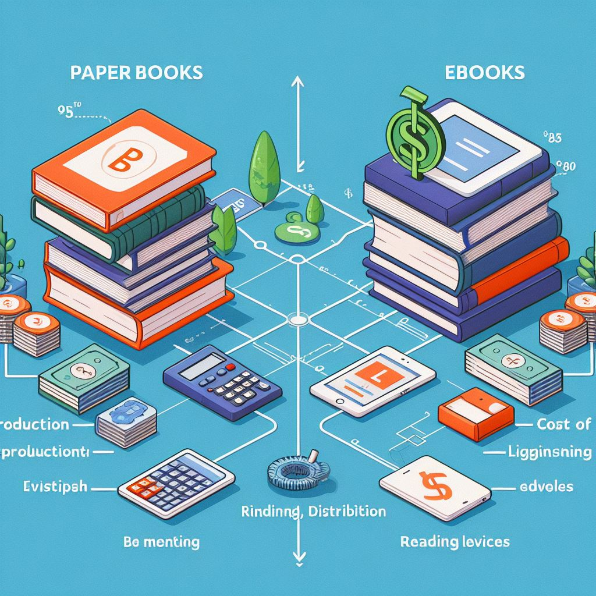
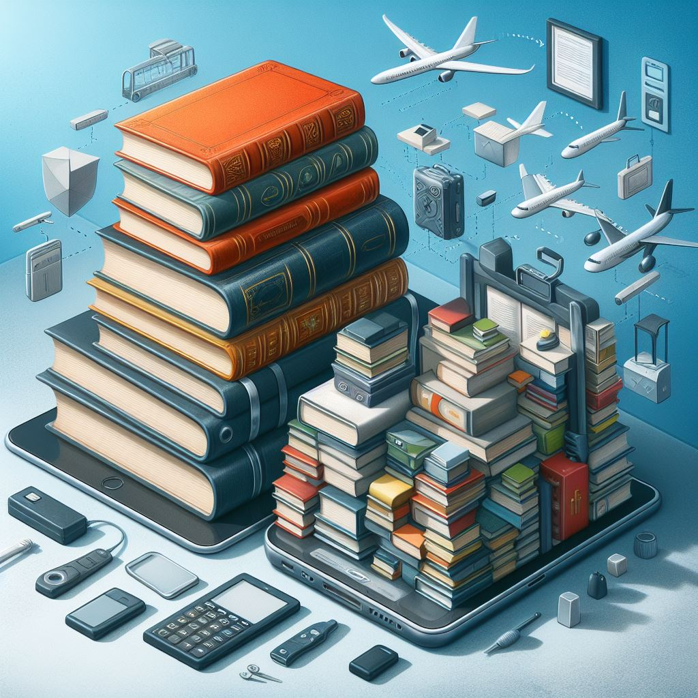
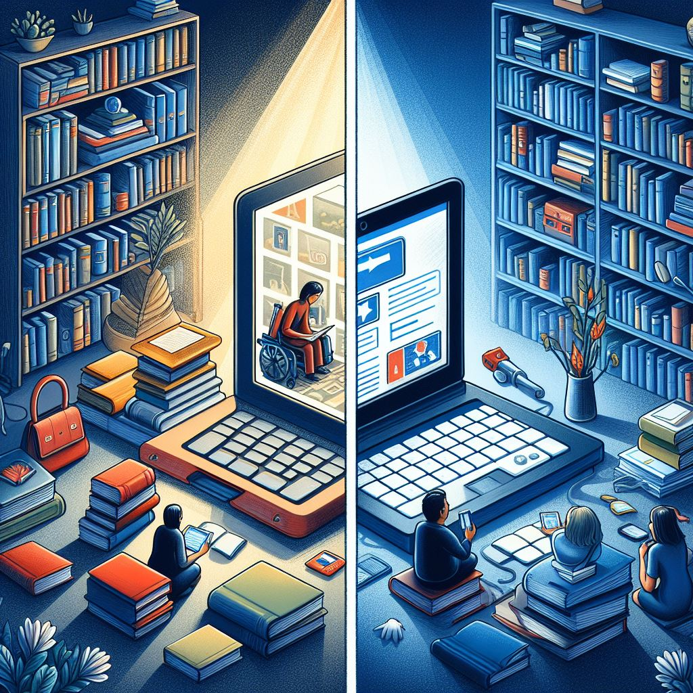
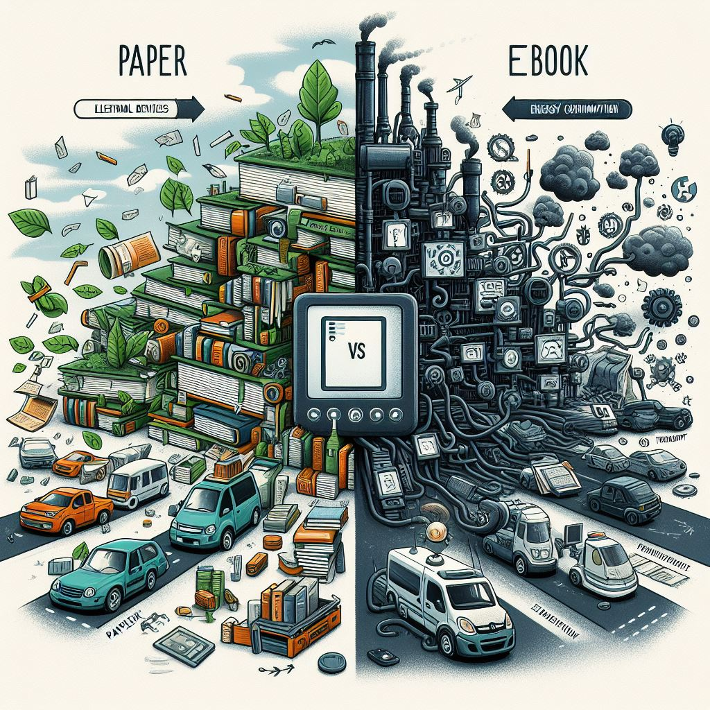
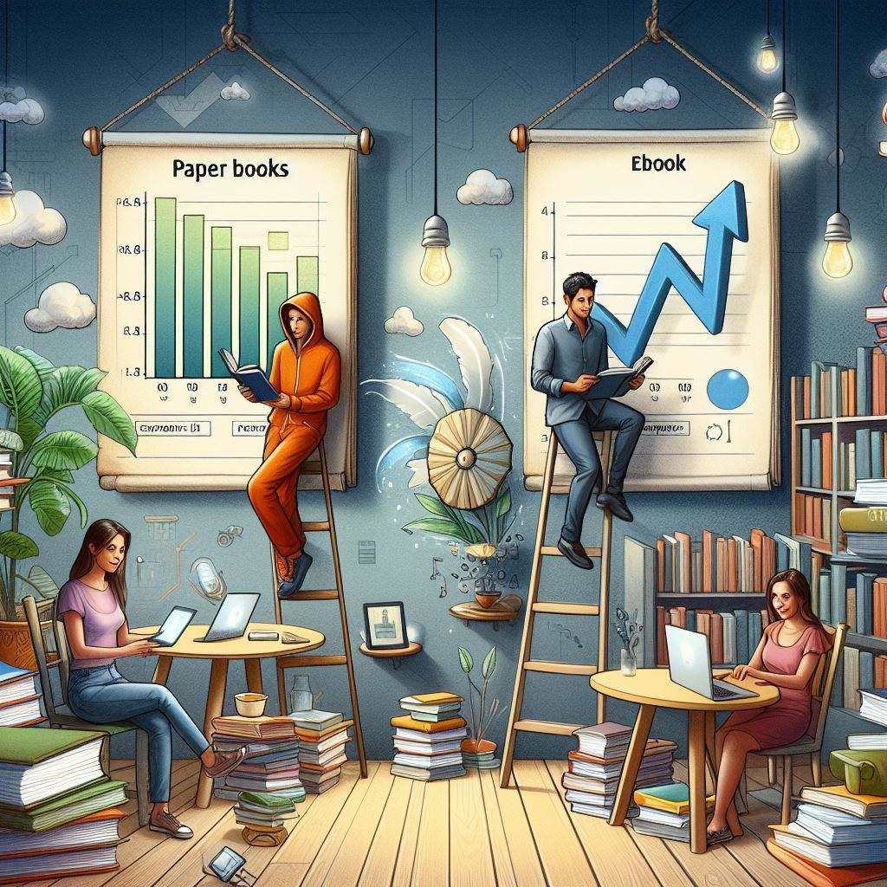

Introduction
La lecture est une activité essentielle dans nos vies, et les formats de livres ont évolué au fil des années. Aujourd'hui, les lecteurs ont le choix entre les livres en papier et les livres numériques (eBooks). Cette présentation explore les avantages et les inconvénients de chaque format, afin de mieux comprendre leurs impacts respectifs sur les lecteurs et l'industrie de l'édition.
Coûts
Livres en papier : Les coûts de production des livres en papier comprennent le papier, l'encre, l'impression et la reliure. De plus, il y a des coûts de transport et de stockage. Ces coûts se répercutent souvent sur le prix final payé par le consommateur.
eBooks : Les eBooks ont des coûts de développement, y compris la mise en forme numérique et les licences de logiciels. Cependant, ils éliminent les coûts d'impression et de distribution physique. Les consommateurs peuvent souvent trouver des eBooks à des prix plus bas, surtout s'ils utilisent des plateformes de vente en ligne.
Portabilité
Livres en papier : Les livres en papier peuvent être encombrants et lourds, surtout si vous souhaitez emporter plusieurs livres avec vous. Cependant, ils ne nécessitent pas de batterie et peuvent être utilisés n'importe où sans souci de recharge.
eBooks : Un appareil de lecture numérique peut contenir des centaines, voire des milliers de livres, et ne pèse généralement pas plus qu'un seul livre en papier. Cela facilite grandement le transport et l'accessibilité des lectures en déplacement.
 Accessibilité
Livres en papier : Les livres en papier sont disponibles dans les librairies physiques et les bibliothèques. Ils peuvent être facilement prêtés ou donnés, et leur possession ne nécessite pas de technologie.
eBooks : Les eBooks peuvent être achetés et téléchargés instantanément depuis n'importe quel endroit avec une connexion Internet. Ils offrent également des fonctionnalités telles que la recherche de texte, les dictionnaires intégrés et la possibilité d'ajuster la taille des caractères pour une meilleure lecture.
 Impact Environnemental
Livres en papier : La production de livres en papier nécessite des ressources naturelles telles que le bois pour le papier et des produits chimiques pour l'encre. La fabrication et la distribution des livres en papier contribuent également aux émissions de carbone.
eBooks : Bien que les eBooks ne nécessitent pas de papier, ils dépendent d'appareils électroniques dont la production, l'utilisation et l'élimination ont des impacts environnementaux. Les appareils de lecture consomment de l'énergie et peuvent contenir des matériaux difficiles à recycler.
Étude de Marché
Les tendances actuelles montrent des préférences variées des lecteurs. Certains préfèrent la tangibilité des livres en papier, appréciant l'odeur